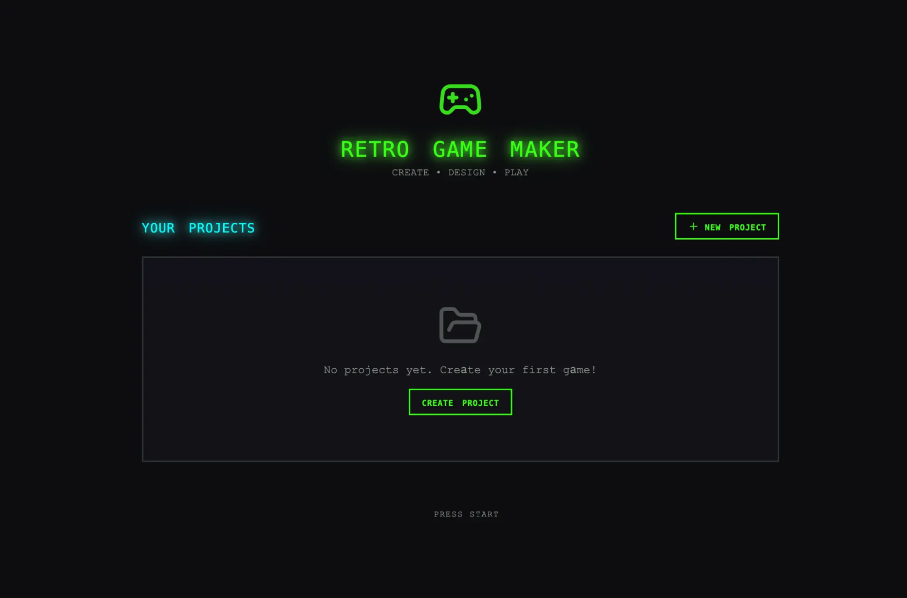
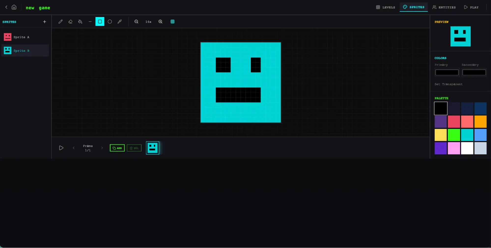
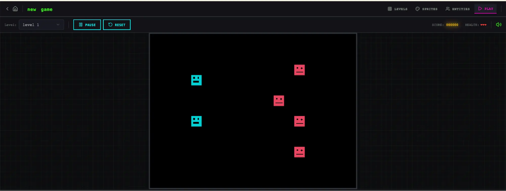
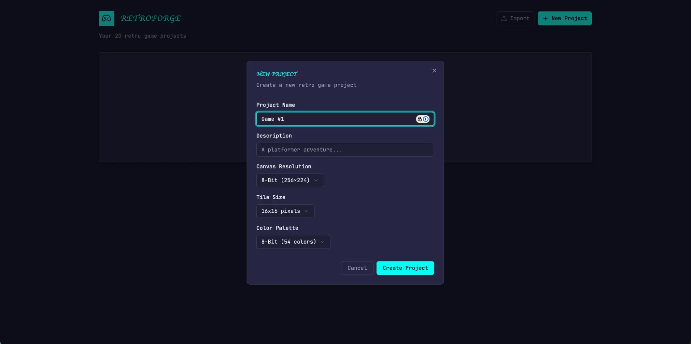
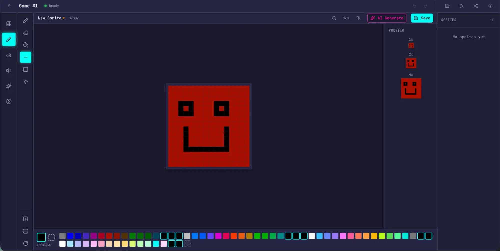
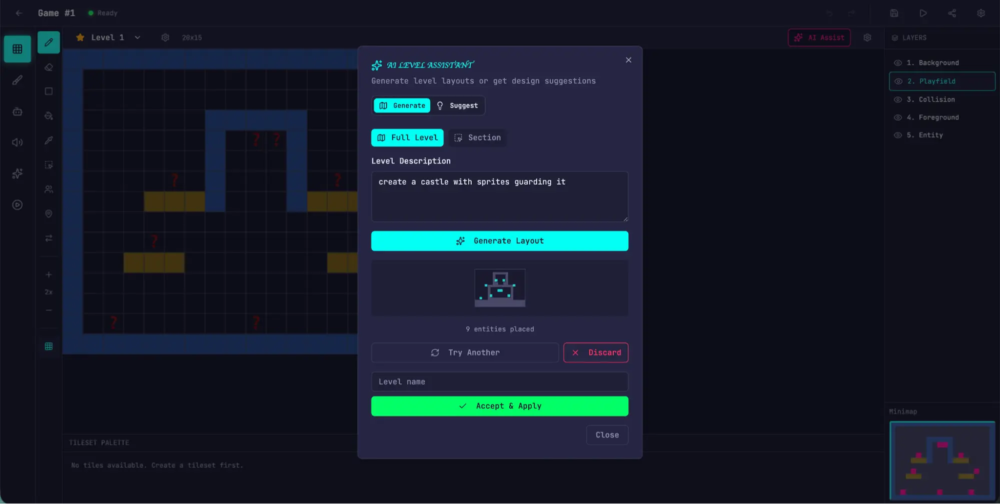
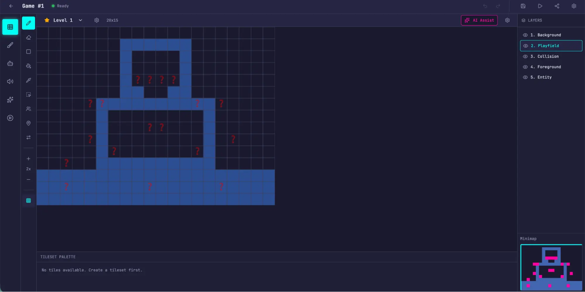
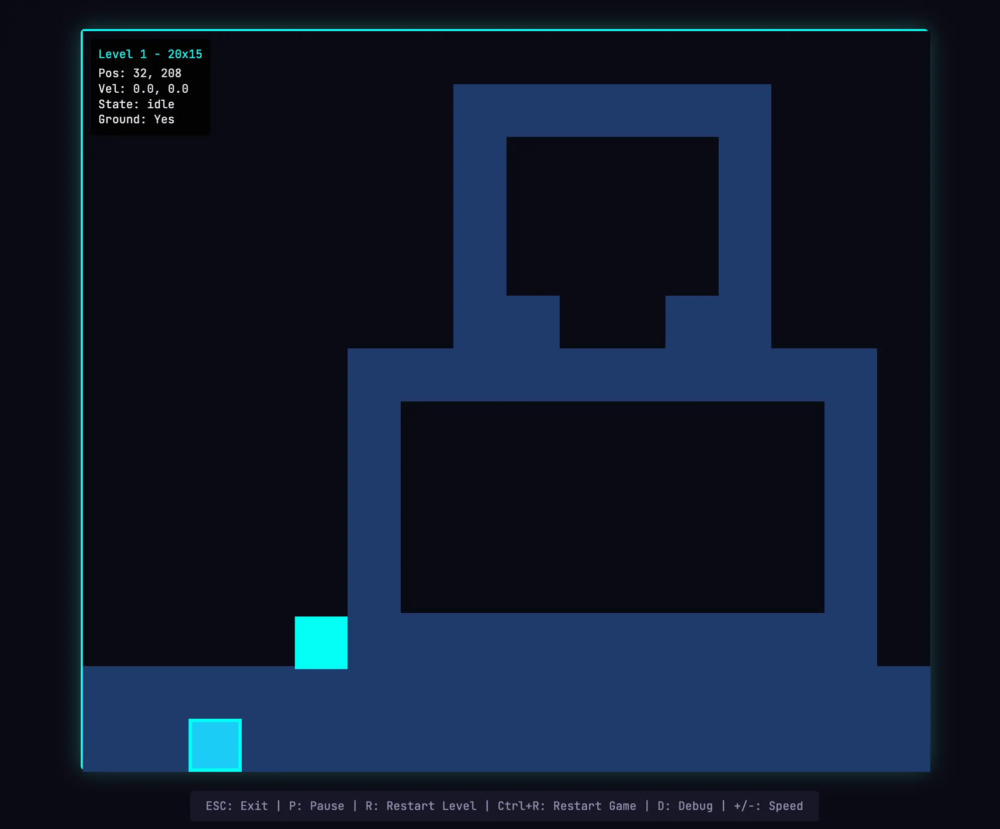

中文全文译文：由「译文工坊」根据英文原文自动翻译生成，供学习参考。结构与措辞以译文为准；想看原始论述，请点上方「阅读原文」。
作者：Prithvi Rajasekaran，我们 Labs 团队成员。
过去几个月，我一直在研究两个相互关联的问题：让 Claude 产出高质量的前端设计，以及让它在无人干预的情况下构建完整的应用。这项工作源于我们早先在前端设计 skill 和长时间运行的编程智能体 harness 上的探索。当时，我和同事通过提示词工程和 harness 设计，把 Claude 的表现提升到了远高于基线的水平，但两者最终都遇到了瓶颈。
为了突破瓶颈，我寻找了一些新颖的 AI 工程方法，希望它们能同时适用于两个截然不同的领域：一个由主观品味决定，另一个则取决于可验证的正确性和可用性。受生成对抗网络（GAN）启发，我设计了一个包含生成器和评估器两个智能体的多智能体结构。要构建一个能够可靠且有品味地为产出打分的评估器，首先得制定一套标准，把“这个设计好不好？”这类主观判断转化为具体、可评分的指标。
随后，我把这些技术应用到长时间运行的自主编程中，并沿用了早先 harness 工作中的两条经验：把构建过程拆分成可处理的小块，以及使用结构化产物在会话之间传递上下文。最终成果是一个由规划器、生成器和评估器组成的三智能体架构，能在长达数小时的自主编程会话中产出功能丰富的全栈应用。
为什么朴素的实现不够用
我们之前已经证明，harness 设计对长时间运行的智能体化编程的效果影响很大。在早先的实验中，我们用一个初始化智能体把产品规格说明拆解为任务列表，再由一个编程智能体逐个功能地实现这些任务，并在会话之间交接产物以传递上下文。更广泛的开发者社区也得出了类似的结论，例如“Ralph Wiggum”方法，就是用 hook 或脚本让智能体持续处于迭代循环中。
但有些问题始终存在。面对更复杂的任务，智能体仍然容易随着时间推移而跑偏。在拆解这一问题时，我们发现智能体执行此类任务时有两种常见的失败模式。
第一，随着上下文窗口被填满，模型在长任务中往往会逐渐失去连贯性（参见我们关于上下文工程的文章）。有些模型还会出现“上下文焦虑”：当它们接近自认为的上下文上限时，就会过早地收尾。上下文重置可以同时解决这两个问题。它会彻底清空上下文窗口并启动一个全新的智能体，再配合一份结构化的交接，把前一个智能体的状态和下一步工作传递过去。
这与压缩（compaction）不同。压缩是把对话的早期部分就地总结，让同一个智能体在缩短后的历史上继续工作。压缩能保持连续性，却不会给智能体一张白纸，所以上下文焦虑仍可能持续存在。重置则提供一张白纸，代价是交接产物必须包含足够的状态，下一个智能体才能顺利接手。在我们早期的测试中，Claude Sonnet 4.5 的上下文焦虑相当严重，仅靠压缩不足以支撑长任务的出色表现，因此上下文重置成了 harness 设计中不可或缺的一环。这解决了核心问题，但每次运行 harness 都会增加编排复杂度、Token 开销和延迟。
第二个问题我们此前没有处理过，那就是自我评估。当被要求评估自己产出的工作时，智能体往往会自信地夸赞，即便在人类观察者看来，质量明显只是平庸。这个问题在设计这类主观任务中尤为突出，因为这里没有类似可验证软件测试的二元检查。布局是精致还是千篇一律，需要靠判断，而智能体在给自己的作品打分时，总是稳定地偏向正面评价。
然而，即便是在结果可验证的任务上，智能体在完成任务的过程中有时仍会表现出糟糕的判断，拖累任务表现。把干活的智能体和评判的智能体分开，是解决这一问题的有力杠杆。这种分离本身并不会立刻消除宽容倾向：评估者仍然是一个大语言模型（LLM），天然倾向于对 LLM 生成的输出手下留情。但事实证明，把独立的评估者调教得更挑剔，要比让生成者苛刻地审视自己的成果容易得多；而一旦有了这种外部反馈，生成者就有了可以据以迭代的具体依据。
前端设计：让主观质量变得可评分
我从前端设计入手做实验，因为自我评估的问题在这里最为明显。在没有任何干预的情况下，Claude 通常倾向于采用安全、可预测的布局：功能上没问题，视觉上却平淡无奇。
有两点认识塑造了我为前端设计搭建的 harness。第一，审美虽然无法完全简化为一个分数，个人品味也always各不相同，但如果评分标准中编码了设计原则与偏好，审美是可以被改进的。“这个设计美吗？”很难得到一致的回答，而“它是否遵循了我们的优秀设计原则？”则让 Claude 有了可以对照评分的具体依据。第二，把前端生成与前端评分分开，就能形成一个反馈闭环，推动生成者产出更出色的结果。
基于此，我写了四条评分标准，并在提示词中同时提供给生成者智能体和评估者智能体：
- 设计质量：设计给人的感觉是一个连贯的整体，还是零散部件的拼凑？出色的作品意味着色彩、排版、布局、图像和其他细节相互配合，营造出独特的氛围与辨识度。
- 原创性：是否有定制化决策的痕迹，还是只是模板布局、组件库默认样式和 AI 生成的套路？人类设计师应当能看出刻意的创意选择。未经修改的现成组件，或是白色卡片叠紫色渐变这类典型的 AI 生成痕迹，在这一项上都不合格。
- 工艺：技术执行层面：排版层级、间距一致性、色彩和谐、对比度。这是一项能力检查，而非创意检查。大多数合理的实现默认都能做好；不及格则意味着基本功有问题。
- 功能性：独立于美学之外的可用性。用户能否理解界面的作用、找到主要操作，并且无需猜测就能完成任务？
我把设计质量和原创性的权重置于工艺和功能性之上。Claude 在工艺和功能性上默认就能拿到不错的分数，因为所需的技术能力对模型来说往往是水到渠成的。但在设计和原创性上，Claude 的产出往往顶多只能算平庸。评分标准明确惩罚高度同质化的“AI slop”模式，而加大设计和原创性的权重，则推动模型在美学上承担更多风险。
我用带有详细分数拆解的少样本示例来校准评估器。这确保了评估器的判断与我的偏好一致，并减少了各次迭代之间的分数漂移。
我基于 Claude Agent SDK 搭建了这个循环，使编排保持简单。生成器智能体首先根据用户提示词创建一个 HTML/CSS/JS 前端。我给评估器配备了 Playwright MCP（模型上下文协议），让它在对每项标准打分并撰写详细评语之前，可以直接与线上页面交互。实际运行中，评估器会自行浏览页面、截图并仔细研究实现，然后给出评估。这些反馈会回流给生成器，作为下一次迭代的输入。每次生成我会运行 5 到 15 次迭代，生成器在回应评估器的评语时，每次迭代通常都会把成果推向更具辨识度的方向。由于评估器是在主动浏览页面，而不是给静态截图打分，每个循环都要消耗真实的时钟时间。完整运行最长可达四个小时。我还要求生成器在每次评估后做出一个策略性决定：如果分数趋势良好，就继续优化当前方向；如果这条路走不通，就转向一种完全不同的美学风格。
在多次运行中，评估器的评分随迭代不断提高，随后趋于平稳，但仍有提升空间。有些生成结果是渐进式打磨，另一些则在迭代之间出现了急剧的美学转向。
评估标准的措辞以我没有完全预料到的方式引导了生成器。像“最好的设计具有博物馆级品质”这样的措辞，会把设计推向某种特定的视觉趋同，这说明与评估标准相关的提示词设计会直接塑造产出的气质。
虽然分数总体上随迭代提升，但这一趋势并不总是干净的线性增长。后期的实现整体上往往更好，但我经常遇到更喜欢中间某一轮而非最后一轮的情况。实现的复杂度也倾向于逐轮上升，生成器会针对评估器的反馈尝试更有野心的方案。即便是第一轮迭代，产出也明显优于完全没有提示词的基线，这说明在评估器给出任何反馈、推动进一步打磨之前，评估标准及其相关措辞本身就已经把模型从通用的默认选项上引开了。
在一个值得一提的示例中，我让模型为一家荷兰艺术博物馆制作网站。到第九轮迭代时，它为一家虚构的博物馆做出了一个简洁的深色主题落地页。页面视觉上很精致，但基本在我的预期之内。然而到第十轮时，它彻底推翻了原有思路，把网站重新构想为一种空间体验：用 CSS 透视渲染出带棋盘格地板的 3D 房间，艺术作品以自由形式挂在墙上，并通过门洞在各展厅之间导航，而不是滚动或点击。这种创造性的飞跃，是我此前从未在单次生成中见过的。
扩展到全栈编码
有了这些发现，我把这种受 GAN 启发的模式应用到了全栈开发中。生成器—评估器循环与软件开发生命周期天然契合，其中代码评审和 QA 所扮演的结构性角色与设计评估器相同。
架构
在我们早先的长时运行 harness中，我们通过一个初始化智能体、一个每次只处理一个功能的编码智能体，以及会话之间的上下文重置，解决了跨多个会话保持编码连贯性的问题。上下文重置是关键的突破口：当时的 harness 使用的是 Sonnet 4.5，它表现出前面提到的“上下文焦虑”倾向。打造一个能在上下文重置之间良好运转的 harness，是让模型始终专注于任务的关键。Opus 4.5 基本自行消除了这种行为，因此我得以把上下文重置完全从这套 harness 中去掉。整个构建过程中，智能体作为一个连续会话运行，上下文的增长则由 Claude Agent SDK 的自动压缩来处理。
这次我在原有 harness 的基础上，构建了一个三智能体系统，每个智能体负责弥补我在之前运行中观察到的一个具体缺口。系统包含以下智能体角色：
规划者（Planner）：我们之前的长时运行 harness 要求用户预先提供详细的规格说明。我想把这一步自动化，于是创建了一个规划智能体，它接收 1-4 句话的简单提示词，并将其扩展为完整的产品规格说明。我在提示词中要求它在范围上要有野心，并专注于产品上下文和高层技术设计，而不是具体的技术实现细节。这样强调，是因为担心如果规划者一开始就给出过细的技术细节而又出了错，规格说明中的错误会层层传导到下游的实现。更明智的做法似乎是约束智能体要产出的交付成果，让它们在工作过程中自己摸索路径。我还要求规划者寻找机会，把 AI 功能融入产品规格说明。（示例见文末附录。）
生成者（Generator）：早先 harness 中一次只做一个功能的方式，在范围管理上效果很好。我在这里采用了类似的模式，指示生成者按冲刺工作，每次从规格说明中选取一个功能。每个冲刺都使用 React、Vite、FastAPI 和 SQLite（后来换成 PostgreSQL）技术栈来实现应用，并且要求生成者在每个冲刺结束、交给 QA 之前先对自己的工作进行自评。它还可以使用 git 进行版本控制。
评估者：早期 harness 产出的应用往往看起来很惊艳，但真正用起来仍然有不少 bug。为了发现这些问题，评估者使用 Playwright MCP，像真实用户一样在运行中的应用里点击操作，测试 UI 功能、API 端点和数据库状态。随后，它会依据自己发现的 bug，以及一套以前端实验为蓝本的评分标准，对每个冲刺打分。这套标准在这里被调整为覆盖产品深度、功能性、视觉设计和代码质量。每项标准都有硬性阈值，只要有一项低于阈值，该冲刺就算失败，生成者会收到关于问题所在的详细反馈。
每个冲刺开始前，生成者和评估者会先协商一份冲刺契约：在编写任何代码之前，就这一块工作“完成”的标准达成一致。这样做是因为产品规格说明刻意写得比较高层，我需要一个步骤来弥合用户故事与可测试实现之间的差距。生成者提出自己要构建什么、如何验证成功，评估者则审阅这份提议，确保生成者做的是对的事。两者反复迭代，直到达成一致。
沟通通过文件完成：一个智能体写下一个文件，另一个智能体读取后，要么在该文件内回应，要么新建一个文件，再由前一个智能体读取。随后，生成者按照约定好的契约进行构建，再把成果交给 QA。这样既让工作忠实于规格说明，又避免过早过度限定实现细节。
运行 harness
在这个 harness 的第一版中，我使用 Claude Opus 4.5，分别用完整 harness 和单智能体系统运行用户提示词，以便对比。我选择 Opus 4.5，是因为开始这些实验时，它是我们最强的编程模型。
我写了下面这条提示词，用来生成一个复古电子游戏制作器：
创建一个 2D 复古游戏制作器，功能包括关卡编辑器、精灵编辑器、实体行为，以及可试玩的测试模式。
下表列出了 harness 类型、运行时长和总成本。
Harness
时长
成本
单智能体
20 分钟
$9
完整 harness
6 小时
$200
这套 harness 的成本高出 20 多倍，但输出质量的差距一眼就能看出来。
我期待的是这样一个界面：可以搭建关卡及其组成部分（sprites、entities、tile layout），然后点击运行就能真正玩这个关卡。我先打开了单智能体运行的产出，最初的应用看起来与这些预期基本吻合。
然而，随着我一路点击下去，问题逐渐暴露。布局浪费空间，固定高度的面板让大部分视口都空着。工作流也很僵硬：想要填充关卡时，系统提示我先创建 sprites 和 entities，但界面里没有任何东西引导我遵循这个顺序。更关键的是，游戏本身根本跑不起来。我的 entities 出现在了屏幕上，却对任何输入都没有反应。深入代码后发现，entity 定义与游戏运行时之间的连接是断开的，而且表面上看不出问题出在哪里。



评估完单智能体的运行结果后，我把注意力转向 harness 的运行结果。这次运行从同样的一句话提示词出发，但规划器步骤把它扩展成了一份包含 16 项功能、横跨十个冲刺的规格说明，远远超出了单智能体运行所尝试的范围。除了核心编辑器和试玩模式，这份规格说明还要求实现 sprite 动画系统、行为模板、音效和音乐、AI 辅助的 sprite 生成器和关卡设计器，以及带分享链接的游戏导出。我让规划器使用了我们的 frontend design skill，它读取后据此为应用创建了视觉设计语言，并写入规格说明。在每个冲刺中，生成器与评估器会协商出一份契约，明确该冲刺的具体实现细节，以及用于验证完成情况的可测试行为。
与单独运行相比，这个应用一上来就显得更精致、更流畅。画布占满了整个视口，面板尺寸合理，界面具有统一的视觉识别，并且贴合规格说明中的设计方向。单独运行时我感受到的一些笨拙之处依然存在——工作流仍然没有说明应当先创建精灵（sprite）和实体，再去填充关卡，我只能自己摸索才弄明白。这更像是基础模型在产品直觉上的欠缺，而不是这套 harness 本来要解决的问题，不过它也确实表明，在 harness 内部进行有针对性的迭代，有望进一步提升输出质量。
在逐个体验各个编辑器的过程中，这次运行相对于单独运行的优势变得更加明显。精灵编辑器功能更丰富、更完整，工具面板更清爽，取色器更好用，缩放控件的可用性也更高。
由于我要求规划器在其规格说明中融入 AI 功能，这个应用还内置了 Claude 集成，让我可以通过提示词来生成游戏的各个部分。这大大加快了工作流。





最大的差别出现在游玩模式。我真的可以移动自己的实体并玩起这个游戏。物理效果还有些粗糙——角色跳上平台后却与平台发生了重叠，直觉上显得不对劲——但核心功能是能用的，而单独运行并没有做到这一点。四处移动了一阵后，我确实碰到了 AI 构建游戏关卡时的一些局限：有一堵很大的墙我怎么也跳不过去，就此卡住了。这说明 harness 还可以处理一些常识层面的改进和边缘情况，从而进一步打磨这个应用。
翻阅日志可以看出，评估器始终让实现与规格说明保持一致。每个冲刺中，它都会逐条核对冲刺合约中的测试标准，并通过 Playwright 操作正在运行的应用，对任何偏离预期行为的地方提交 bug。这些合约十分细致——仅冲刺 3 就有 27 条标准，覆盖关卡编辑器——评估器给出的发现也足够具体，无需额外排查即可着手修复。下表列出了评估器发现的几个问题示例：
合约标准
评估器的发现
矩形填充工具支持点击并拖动，用所选图块填充矩形区域
未通过 — 工具只在拖动的起点和终点放置图块，而不是填充整个区域。fillRectangle 函数存在，但在 mouseUp 时没有被正确触发。
用户可以选中并删除已放置的实体出生点
未通过 — LevelEditor.tsx:892 中的 Delete 键处理函数要求 selection 和 selectedEntityId同时被设置，但点击实体时只会设置 selectedEntityId。条件应为 selection || (selectedEntityId && activeLayer === 'entity')。
用户可以通过 API 重新排序动画帧
未通过 — PUT /frames/reorder 路由定义在 /{frame_id} 路由之后。FastAPI 把 'reorder' 当作整数类型的 frame_id 去匹配，并返回 422："unable to parse string as an integer."
要让评估器达到这个水平，需要下一番功夫。开箱即用的 Claude 是个很糟糕的 QA 智能体。早期运行中，我看着它找出了真实存在的问题，却又自己说服自己“问题不大”，最终还是通过了工作成果。它还倾向于只做表面测试，而不去深挖边缘情况，因此更隐蔽的 bug 常常漏网。调优的循环是：阅读评估器的日志，找出它的判断与我不一致的示例，再更新 QA 的提示词来解决这些问题。这样的开发循环经历了好几轮，评估器的打分方式才让我觉得合理。即便如此，harness 的输出仍然显示出模型 QA 能力的局限：细小的布局问题、某些地方不够直观的交互，以及嵌套更深的功能中未被发现的 bug，评估器并没有对这些功能做足够彻底的测试。显然，通过进一步调优，验证能力还有提升空间。但与单智能体独立运行相比——应用的核心功能根本无法使用——这一提升是显而易见的。
迭代优化 harness
第一版 harness 的结果令人鼓舞，但它也臃肿、缓慢且昂贵。顺理成章的下一步，就是在不降低性能的前提下想办法简化 harness。这一方面出于常识，另一方面也源于一个更普遍的原则：harness 中的每个组件，都编码了一个关于“模型自己做不到什么”的假设，而这些假设值得做压力测试——它们可能本来就不正确，也可能随着模型进步很快过时。我们的博客文章 Building Effective Agents 把这一核心理念概括为“尽可能找到最简单的解决方案，只在必要时才增加复杂度”，任何维护智能体 harness 的人都会反复遇到这种模式。
在第一次简化尝试中，我大刀阔斧地精简了 harness，并尝试了几个新颖的想法，但始终无法复现原版的性能。同时，我也很难判断 harness 设计中究竟哪些部分是真正承重的，又是以什么方式承重的。基于这次经验，我改用了更有条理的方法：每次只移除一个组件，并观察它对最终结果的影响。
在这些迭代循环进行的过程中，我们还发布了 Opus 4.6，这进一步促使我降低 harness 的复杂度。我们有充分的理由预期，4.6 所需的脚手架会比 4.5 更少。正如我们在发布博客中所说：“[Opus 4.6] 规划更审慎，能更长时间地持续执行智能体化的任务，在更大的代码库中运行更可靠，并且具备更强的代码评审与调试能力，可以发现自己的错误。”它在长上下文检索方面也有显著提升。而这些，恰恰都是 harness 当初为了弥补而构建的能力。
移除冲刺结构
我首先把冲刺结构整个移除了。冲刺结构原本有助于把工作拆分成若干块，让模型能够连贯地推进。鉴于 Opus 4.6 的改进，我们有充分的理由相信，模型无需这种拆分也能原生胜任这项工作。
我保留了规划器（planner）和评估器（evaluator），因为它们各自仍在带来明显价值。没有规划器时，生成器会低估任务范围：面对原始提示词，它会不先撰写规格说明就直接开始构建，最终做出的应用功能会比有规划器时少得多。
去掉冲刺结构后，我把评估器改为在整个运行结束时只评估一次，而不再按冲刺逐个打分。由于模型能力强了很多，评估器在某些运行中的重要程度也随之改变，其价值取决于任务相对于模型自身能稳定完成的范围处在什么位置。在 4.5 上，这条边界很近：我们的构建任务正处在生成器单独也能做好的极限边缘，评估器在整个构建过程中都能抓出有意义的问题。到了 4.6，模型的原始能力提升，边界向外移动。过去需要评估器把关才能连贯实现的任务，现在往往生成器自己就能处理得很好；对于边界以内的任务，评估器成了多余的开销。但对于构建中仍处在生成器能力边缘的部分，评估器依然能带来实实在在的提升。
实际的启示是：评估器并不是一个固定的“要或不要”的决定。当任务超出当前模型单独就能稳定完成的范围时，它才值得付出这份成本。
在简化结构的同时，我还加入了提示词设计，来改进 harness 在每个应用中构建 AI 功能的方式，具体来说，就是让生成器构建一个真正的智能体，通过工具来驱动应用自身的功能。这需要大量迭代，因为相关知识出现得比较晚，Claude 的训练数据对它的覆盖很薄。但经过足够的调优，生成器已经能正确地构建智能体了。
更新后 harness 的结果
为了检验更新后的 harness，我用下面这条提示词生成了一个数字音频工作站（DAW），即用于作曲、录音和混音的音乐制作程序：
使用 Web Audio API，在浏览器中构建一个功能完备的 DAW。
这次运行依然漫长而昂贵，耗时约 4 小时，Token 成本为 $124。
大部分时间花在了构建器上，它在没有 Opus 4.5 所需的冲刺拆分的情况下，连贯运行了两个多小时。
智能体与阶段
时长
成本
规划器
4.7 分钟
$0.46
构建（第 1 轮）
2 小时 7 分钟
$71.08
QA（第 1 轮）
8.8 分钟
$3.24
构建（第 2 轮）
1 小时 2 分钟
$36.89
QA（第 2 轮）
6.8 分钟
$3.09
构建（第 3 轮）
10.9 分钟
$5.88
QA（第 3 轮）
9.6 分钟
$4.06
V2 完整 Harness
3 小时 50 分钟
$124.70
和之前的 harness 一样，规划器把一句话的提示词扩展成了完整的规格说明。从日志中可以看到，生成器模型在规划应用和智能体设计、接入智能体，以及交付 QA 之前的测试上都做得不错。
即便如此，QA 智能体仍然发现了真实存在的缺口。在第一轮反馈中，它指出：
这是一款很出色的应用：设计还原度极高，智能体表现扎实，后端也很好。主要的失分点在功能完整性——虽然应用看起来令人印象深刻，AI 集成也运行良好，但若干核心 DAW 功能只能展示，缺乏交互深度：片段无法在时间轴上拖动或移动，没有乐器 UI 面板（合成器旋钮、鼓垫），也没有可视化效果编辑器（EQ 曲线、压缩器电平表）。这些不是边缘情况——它们是让 DAW 真正可用的核心交互，而且规格说明中明确要求了。
在第二轮反馈中，它又发现了几处功能缺口：
仍然存在的缺口：
- 音频录制仍然只是占位实现（按钮可以切换，但没有麦克风采集）
- 尚未实现拖动边缘调整片段长度和片段分割
- 效果可视化只是数值滑块，而非图形化展示（没有 EQ 曲线）
如果放任不管，生成器仍然可能遗漏细节，或者只做功能占位；而 QA 在抓出这些“最后一公里”的问题、交给生成器修复方面，依然很有价值。
根据提示词，我期望得到这样一个程序：我可以创作旋律、和声和鼓点节奏，把它们编排成一首歌，并在过程中获得内置智能体的帮助。下面的视频展示了最终结果。
这款应用远不是专业的音乐制作软件，智能体的作曲能力显然还有很大提升空间。此外，Claude 实际上听不到声音，这让 QA 反馈循环在音乐品味方面的效果打了折扣。
不过，最终的应用具备了一个可用音乐制作程序的所有核心部分：在浏览器中运行的编曲视图、调音台和走带控制。除此之外，我还完全通过提示词设计做出了一小段歌曲：智能体设定了速度和调式，写下旋律，搭建鼓轨，调整调音台电平，并加入混响。歌曲创作所需的核心基本单元都已就位，智能体可以自主驱动它们，借助工具从头到尾完成一段简单的制作。你也许会说它还不够“音准完美”，但它正在接近。
下一步会怎样
随着模型不断进步，我们大致可以预期它们能工作更长时间，处理更复杂的任务。在某些情况下，这意味着围绕模型的脚手架会越来越不重要，开发者只需等待下一代模型，某些问题就会自行解决。另一方面，模型越强，就越有空间去开发各种 harness，完成模型在基线水平下无法胜任的复杂任务。
有鉴于此，这项工作中有几条经验值得延续。针对你所构建的模型做实验，在真实问题上阅读它的轨迹，并调优其表现以达成预期结果，始终是好的实践。处理更复杂的任务时，有时可以通过拆解任务，让专门的智能体分别负责问题的各个方面，从而获得提升空间。而当新模型发布时，通常也应重新审视 harness：去掉那些对性能不再起承重作用的部分，并加入新的部分，以实现此前可能无法达到的更强能力。
这项工作让我确信：有趣的 harness 组合空间不会随着模型进步而缩小，而是会发生转移。AI 工程师有价值的工作，就是不断找到下一种新颖的组合。
附录
由规划器智能体生成的计划示例。
RetroForge - 2D Retro Game Maker
Overview
RetroForge is a web-based creative studio for designing and building 2D retro-style video games. It combines the nostalgic charm of classic 8-bit and 16-bit game aesthetics with modern, intuitive editing tools—enabling anyone from hobbyist creators to indie developers to bring their game ideas to life without writing traditional code.
The platform provides four integrated creative modules: a tile-based Level Editor for designing game worlds, a pixel-art Sprite Editor for crafting visual assets, a visual Entity Behavior system for defining game logic, and an instant Playable Test Mode for real-time gameplay testing. By weaving AI assistance throughout (powered by Claude), RetroForge accelerates the creative process—helping users generate sprites, design levels, and configure behaviors through natural language interaction.
RetroForge targets creators who love retro gaming aesthetics but want modern conveniences. Whether recreating the platformers, RPGs, or action games of their childhood, or inventing entirely new experiences within retro constraints, users can prototype rapidly, iterate visually, and share their creations with others.
Features
1. Project Dashboard & Management
The Project Dashboard is the home base for all creative work in RetroForge. Users need a clear, organized way to manage their game projects—creating new ones, returning to works-in-progress, and understanding what each project contains at a glance.
User Stories: As a user, I want to:
- Create a new game project with a name and description, so that I can begin designing my game
- See all my existing projects displayed as visual cards showing the project name, last modified date, and a thumbnail preview, so that I can quickly find and continue my work
- Open any project to enter the full game editor workspace, so that I can work on my game
- Delete projects I no longer need, with a confirmation dialog to prevent accidents, so that I can keep my workspace organized
- Duplicate an existing project as a starting point for a new game, so that I can reuse my previous work
Project Data Model: Each project contains:
Project metadata (name, description, created/modified timestamps)
Canvas settings (resolution: e.g., 256x224, 320x240, or 160x144)
Tile size configuration (8x8, 16x16, or 32x32 pixels)
Color palette selection
All associated sprites, tilesets, levels, and entity definitions
...作者与致谢
致谢
特别感谢 Mike Krieger、Michael Agaby、Justin Young、Jeremy Hadfield、David Hershey、Julius Tarng、Xiaoyi Zhang、Barry Zhang、Orowa Sidker、Michael Tingley、Ibrahim Madha、Martina Long 和 Canyon Robbins 对这项工作的贡献。
同时感谢 Jake Eaton、Alyssa Leonard 和 Stef Sequeira 在本文成稿过程中提供的帮助。